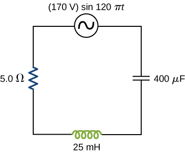

![Figure a shows a circuit with an AC voltage source connected to a resistor, a capacitor and an inductor in series. The source is labeled V0 sine omega t. Figure b shows sine waves of AC voltage and current on the same graph. Voltage has a greater amplitude than current and its maximum value is marked V0 on the y axis. The maximum value of current is marked I0. The two curves have the same wavelength but are out of phase. The voltage curve is labeled V parentheses t parentheses equal to V0 sine omega t. The current curve is labeled I parentheses t parentheses equal to I0 sine parentheses omega t minus phi parentheses.](CNX_UPhysics_32_03_acrlc.jpg)
By the end of this section, you will be able to:
The ac circuit shown in [link], called an RLC series circuit, is a series combination of a resistor, capacitor, and inductor connected across an ac source. It produces an emf of
Since the elements are in series, the same current flows through each element at all points in time. The relative phase between the current and the emf is not obvious when all three elements are present. Consequently, we represent the current by the general expression
where is the current amplitude and is the phase angle between the current and the applied voltage. The phase angle is thus the amount by which the voltage and current are out of phase with each other in a circuit. Our task is to find
A phasor diagram involving is helpful for analyzing the circuit. As shown in [link], the phasor representing points in the same direction as the phasor for its amplitude is The phasor lags the i(t) phasor by rad and has the amplitude The phasor for leads the i(t) phasor by rad and has the amplitude
![Figure shows the coordinate axes, with four arrows starting from the origin. Arrow V subscripts R points up and right, making an angle omega t minus phi with the x axis. Its y intercept is V subscript R parentheses t parentheses. Arrow I0 is along arrow V subscript R, but shorter than it. Arrow V subscript L points up and left and is perpendicular to V subscript R. It makes a y intercept V subscript L parentheses t parentheses. Arrow V subscript C points down and right. It is perpendicular to V subscript R. It makes a y intercept V subscript C parentheses t parentheses. Three arrows labeled omega are each perpendicular to V subscript R, V subscript L and V subscript C, shown near their tips.](CNX_UPhysics_32_03_phasorrlc.jpg)
At any instant, the voltage across the RLC combination is the emf of the source. Since a component of a sum of vectors is the sum of the components of the individual vectors—for example, —the projection of the vector sum of phasors onto the vertical axis is the sum of the vertical projections of the individual phasors. Hence, if we add vectorially the phasors representing and then find the projection of the resultant onto the vertical axis, we obtain
The vector sum of the phasors is shown in [link]. The resultant phasor has an amplitude and is directed at an angle with respect to the or i(t), phasor. The projection of this resultant phasor onto the vertical axis is We can easily determine the unknown quantities and from the geometry of the phasor diagram. For the phase angle,
and after cancellation of this becomes
Furthermore, from the Pythagorean theorem,
![Three arrows start from the origin on the coordinate axis. Arrow V subscript R points up and right, making an angle omega t minus phi with the x axis. Arrow V0 points up and right, making an angle omega t with the x axis. It makes an angle phi with the arrow V subscript R. It makes a y intercept labeled V0 sine omega t. The third arrow is labeled V subscript L minus V subscript C. It points up and left and is perpendicular to arrow V subscript R. Dotted lines indicate that the rectangle formed with its longer side being V subscript R and shorter side being V subscript L minus V subscript C, would have the arrow V0 as a diagonal. An arrow labeled omega is shown near the tip of V subscript R, perpendicular to it.](CNX_UPhysics_32_03_vectorsum.jpg)
The current amplitude is therefore the ac version of Ohm’s law:
where
is known as the impedance of the circuit. Its unit is the ohm, and it is the ac analog to resistance in a dc circuit, which measures the combined effect of resistance, capacitive reactance, and inductive reactance ([link]).
The RLC circuit is analogous to the wheel of a car driven over a corrugated road ([link]). The regularly spaced bumps in the road drive the wheel up and down; in the same way, a voltage source increases and decreases. The shock absorber acts like the resistance of the RLC circuit, damping and limiting the amplitude of the oscillation. Energy within the wheel system goes back and forth between kinetic and potential energy stored in the car spring, analogous to the shift between a maximum current, with energy stored in an inductor, and no current, with energy stored in the electric field of a capacitor. The amplitude of the wheel’s motion is at a maximum if the bumps in the road are hit at the resonant frequency, which we describe in more detail in Resonance in an AC Circuit.
To analyze an ac circuit containing resistors, capacitors, and inductors, it is helpful to think of each device’s reactance and find the equivalent reactance using the rules we used for equivalent resistance in the past. Phasors are a great method to determine whether the emf of the circuit has positive or negative phase (namely, leads or lags other values). A mnemonic device of “ELI the ICE man” is sometimes used to remember that the emf (E) leads the current (I) in an inductor (L) and the current (I) leads the emf (E) in a capacitor (C).
Use the following steps to determine the emf of the circuit by phasors:
An RLC Series Circuit The output of an ac generator connected to an RLC series combination has a frequency of 200 Hz and an amplitude of 0.100 V. If and what are (a) the capacitive reactance, (b) the inductive reactance, (c) the impedance, (d) the current amplitude, and (e) the phase difference between the current and the emf of the generator?
Strategy The reactances and impedance in (a)–(c) are found by substitutions into [link], [link], and [link], respectively. The current amplitude is calculated from the peak voltage and the impedance. The phase difference between the current and the emf is calculated by the inverse tangent of the difference between the reactances divided by the resistance.
Solution
Significance The phase angle is positive because the reactance of the inductor is larger than the reactance of the capacitor.
Check Your Understanding Find the voltages across the resistor, the capacitor, and the inductor in the circuit of [link] using as the output of the ac generator.
In an RLC series circuit, can the voltage measured across the capacitor be greater than the voltage of the source? Answer the same question for the voltage across the inductor.
yes for both
What is the impedance of a series combination of a resistor, a capacitor, and a capacitor at a frequency of 2.0 kHz?
A resistor and capacitor are connected in series across an ac generator. The emf of the generator is given by where , and . (a) What is the impedance of the circuit? (b) What is the amplitude of the current through the resistor? (c) Write an expression for the current through the resistor. (d) Write expressions representing the voltages across the resistor and across the capacitor.
a. ; b. 0.16 A; c. ; d. ;
A resistor and inductor are connected in series across an ac generator. The emf of the generator is given by where and also, and (a) What is the impedance of the circuit? (b) What is the amplitude of the current through the resistor? (c) Write an expression for the current through the resistor. (d) Write expressions representing the voltages across the resistor and across the inductor.
In an RLC series circuit, the voltage amplitude and frequency of the source are 100 V and 500 Hz, respectively, an and (a) What is the impedance of the circuit? (b) What is the amplitude of the current from the source? (c) If the emf of the source is given by , how does the current vary with time? (d) Repeat the calculations with C changed to
a. ; b. 0.15 A; c. ; d. , 0.092 A,
An RLC series circuit with , and is driven by an ac source whose frequency and voltage amplitude are 500 Hz and 50 V, respectively. (a) What is the impedance of the circuit? (b) What is the amplitude of the current in the circuit? (c) What is the phase angle between the emf of the source and the current?
For the circuit shown below, what are (a) the total impedance and (b) the phase angle between the current and the emf? (c) Write an expression for
a. ; b. ; c.